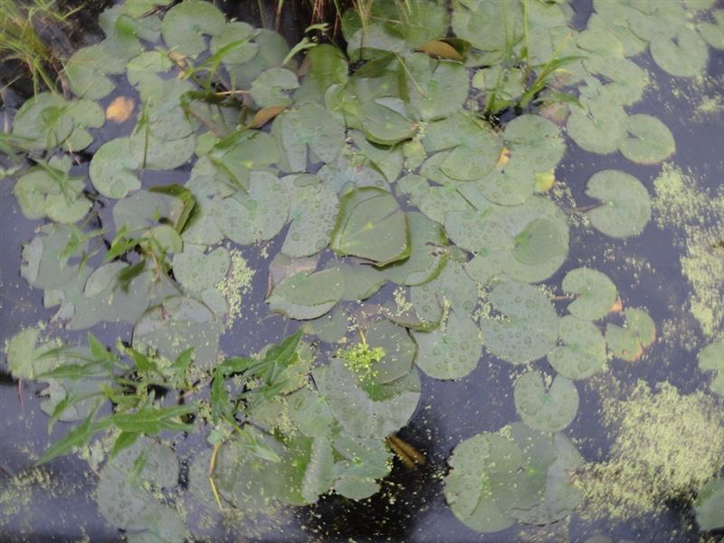
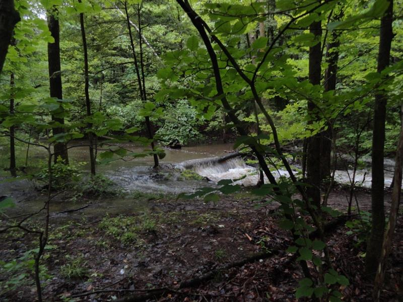
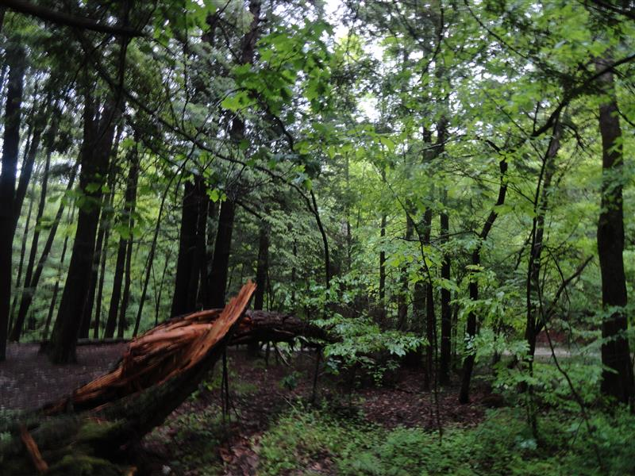
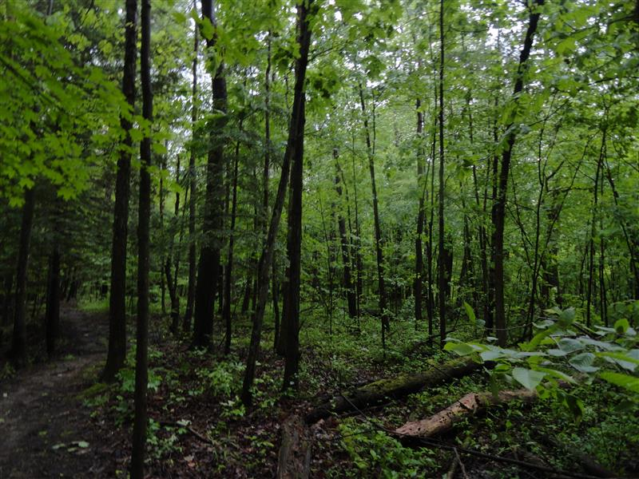
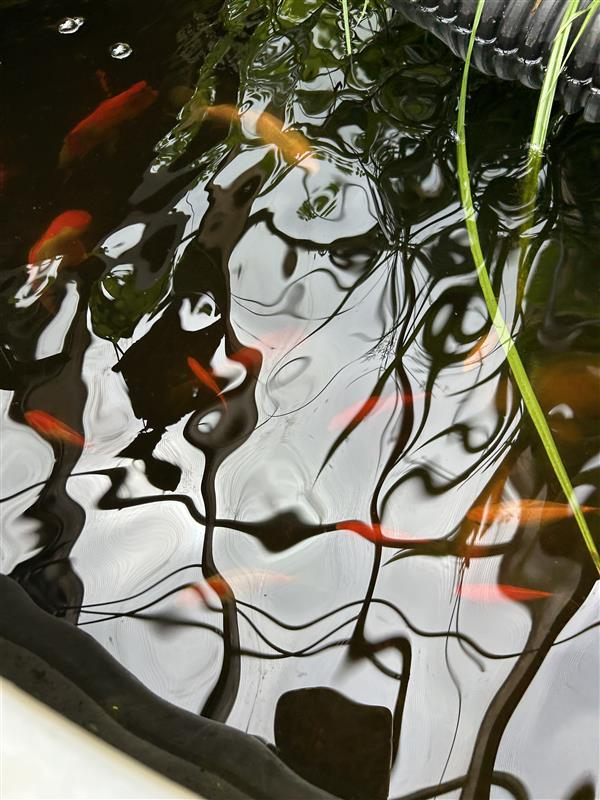
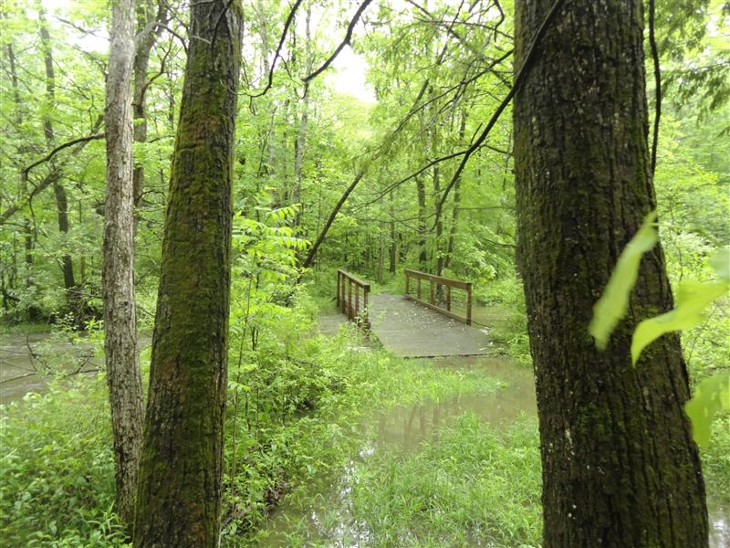

In each passing moment, I picture myself roaming beautiful mountains, rolling hills, and expansive prairies. Each time I blink, you can expect a vision of lush green Earth to appear. Last year, I decided that re-wilding my life and surrondings will be my number one priority. In honor of my newly found liberation, I decided to celebrate independence day by finally getting out to my first real mountain, Sleeping Beauty. The hike was strenuous, and I could hardly breathe, but the summit was truly phenominal. The dopamine and pure rush of finally making it to the top was a feeling I could never forget. Since then, I've been awaiting my next mountain!
Indian Meadows Park supports a variety of native plant and wetland species common to eastern New York ecosystems. The preserve includes meadow habitats, forested areas, and wetland environments that support native grasses, goldenrod, milkweed, cattails, maples, oaks, and eastern white pine. These habitats also provide food and shelter for pollinators such as monarch butterflies and native bees, along with birds, amphibians, and small mammals. Wetland vegetation in the preserve plays an important role in maintaining biodiversity and supporting healthy ecological relationships throughout the Mohawk Valley region.
Indian Meadows Nature Preserve serves as an important ecological corridor and wetland habitat within the suburban Capital Region landscape. Wetlands and meadow systems help absorb stormwater, reduce flooding, filter pollutants, and recharge groundwater supplies. Native vegetation also captures carbon dioxide, stabilizes soil, and provides critical habitat for wildlife in an increasingly developed region. Preserves such as Indian Meadows contribute to regional biodiversity conservation by protecting natural habitats that might otherwise be fragmented by urban and suburban expansion.
Climate change and human foot traffic impact soil and plant health.
Capital District Land Conservancy. (n.d.). Indian Meadows Park and Preserve. https://www.cdland.org/ New York State Department of Environmental Conservation. (n.d.). Freshwater wetlands. https://dec.ny.gov/nature/waterbodies-oceans/wetlands New York State Department of Environmental Conservation. (n.d.). Invasive species. https://dec.ny.gov/nature/animals-fish-plants/invasive-species United States Environmental Protection Agency. (n.d.). Climate impacts on ecosystems. https://www.epa.gov/climateimpacts/climate-impacts-ecosystems United States Fish and Wildlife Service. (n.d.). Importance of pollinators. https://www.fws.gov/pollinators/